library(tidyverse)
library(skimr)
library(lubridate)
library(stargazer)
library(broom)Fall 2022 DANL 200 Final Exam 1
Load R packages
Question 1
The following is the description for Question 1:
The Nobel Prize in Economic Science in 2021 goes to David Card, Joshua Angrist and Guido Imbens, for their empirical contributions to labor economics, and for their methodological contributions to the analysis of causal relationships.
The Nobel Laureates – David Card, Joshua Angrist and Guido Imbens – have provided us with new insights about the labor market and shown what conclusions about cause and effect can be drawn from natural experiments. Their approach has spread to other fields and revolutionized empirical research.
The following data.frame comes from the 1980 US Census and covers men born 1930–1939, which is used by Joshua Angrist and Alan Krueger’s research article.
ak91_age <- read_csv(
'https://bcdanl.github.io/data/ak91_age.csv'
)Variable description
QoB: Quarter of birthYoB: Year of birth (1930, 1931, …, 1939)YoBQ: Year and quarter of birth (1930 Q1, 1930 Q2, …, 1939 Q4)logW: the natural log of weekly wageEduc: Years of educationQ4:TRUEifQoB == 4;FALSEotherwise.
Q1a
Describe the relationship between years of schooling and quarter of birth.
Show the code
ggplot(ak91_age, aes(x = YoBQ, y = Educ)) +
geom_line() +
geom_point( aes(color = Q4) ) 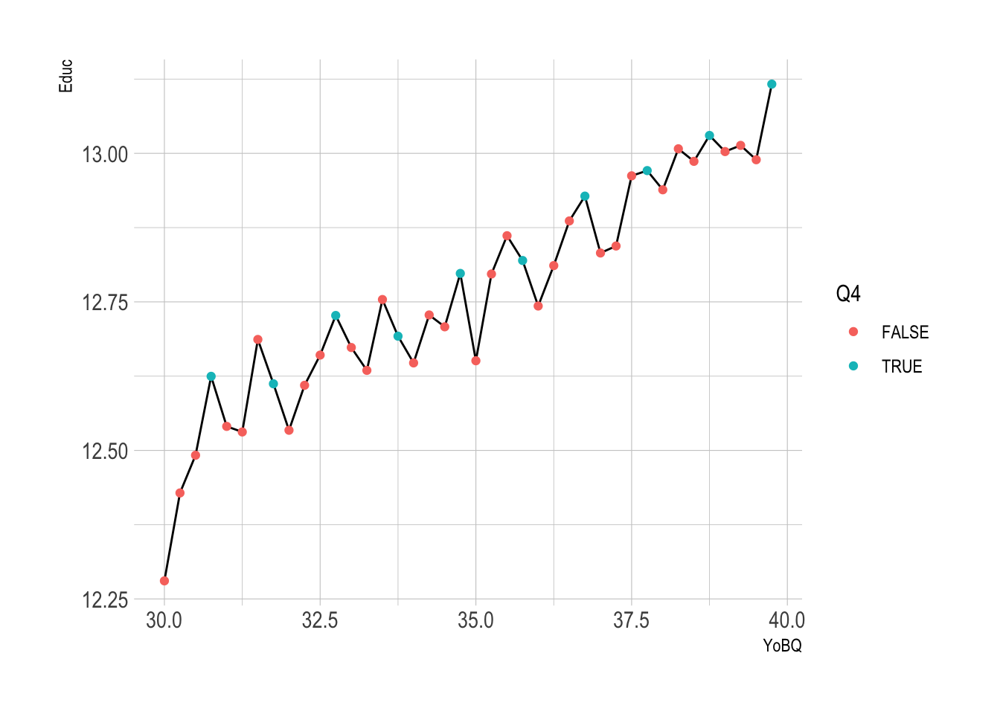
A child born in late December can start first grade earlier than a child, nearly the same age, who is born in early January.
For many decades an individual could quit school at age 16.
The random factor of quarter of birth is correlated with (months) of education.
People who were born in the first quarter of the year get a little bit less education than people born in the fourth quarter!
The difference is small, .1 or so of a year but it’s clear the difference is there.
This figure plots average schooling by year and QoB for men born in the 1930s.
- Most men in these cohorts finished high school, so their average highest grade completed ranges from 12 to 13 years.
This figure exhibits a surprising sawtooth pattern:
- Men born earlier in the year tend to have lower average schooling than those born later.
The teeth of the saw have an amplitude of about 0.15.
Among men born in the 1930s, about 20% left school in grade 10 or sooner.
Late-quarter births impose about 0.75 of a grade’s worth of extra schooling on this 20%. The calculation .2 × .75 = .15 accounts for the ups and downs in this figure.
Q1b.
Describe the relationship between the log of weekly wage and quarter of birth.
Show the code
ggplot(ak91_age, aes(x = YoBQ, y = logW)) +
geom_line() +
geom_point( aes(color = Q4) ) 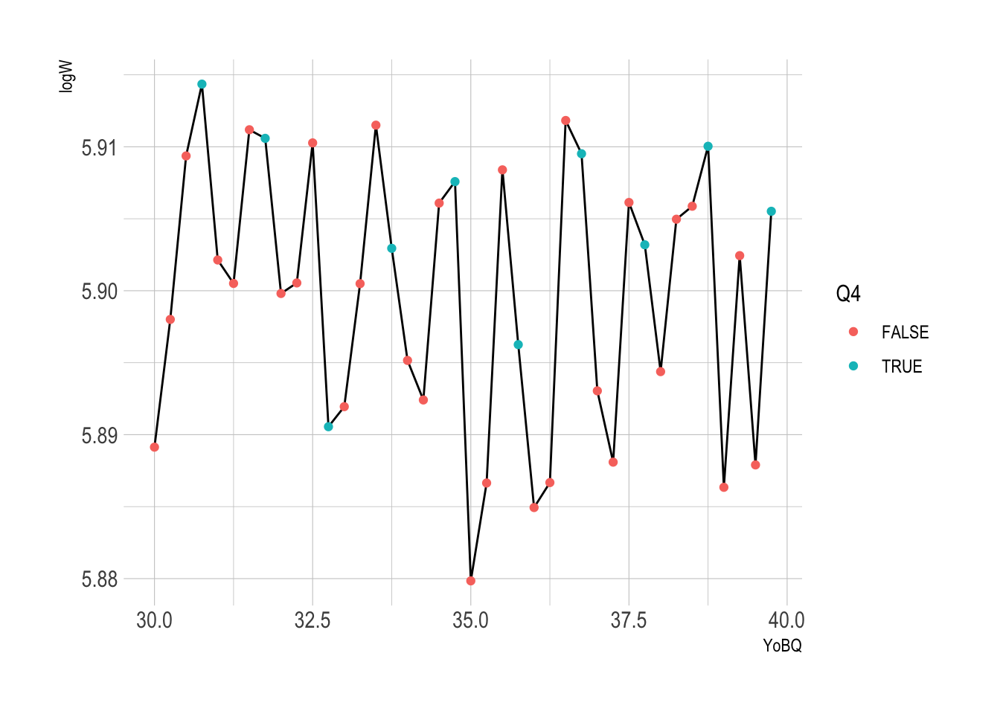
- The flatness of earnings from year to year seen in this figure isn’t surprising.
- Earnings initially increase sharply with age, but the age-earnings profile tends to flatten out for men in their forties.
- Importantly, however, the
QoBsawtooth in schooling is paralleled by a similarQoBsawtooth in average earnings. - Men born later in the year not only get more schooling than those born earlier, they have higher earnings as well.
Q1c.
Calculate the mean value of logW and the mean value of Educ for each combination of values of variables YoB and Q4.
Show the code
q1c <- ak91_age %>%
arrange(YoBQ) %>%
group_by(YoB, Q4) %>%
summarise(mean_logW = mean(logW, na.rm = T),
mean_Educ = mean(Educ, na.rm = T))Q1d.
Calculate the difference between the mean value of
logWforQ4 == TRUEthe mean value oflogWforQ4 == FALSEfor each value ofYoB.Calculate the difference between the mean value of
EducforQ4 == TRUEthe mean value ofEducforQ4 == FALSEfor each value ofYoB.
Show the code
q4d_w <- q1c %>%
select(-mean_Educ) %>%
pivot_wider(names_from = Q4,
values_from = mean_logW,
names_prefix = "Q4_") %>%
mutate( diff_logW = Q4_TRUE - Q4_FALSE )
q4d_e <- q1c %>%
select(-mean_logW) %>%
pivot_wider(names_from = Q4,
values_from = mean_Educ,
names_prefix = "Q4_") %>%
mutate( diff_Educ = Q4_TRUE - Q4_FALSE )Question 2
One of the last year’s Nobel Laureates, David Card, wrote the research paper—Card, David and Krueger, Alan. “Minimum Wages and Employment: A Case Study of the Fast-Food Industry in New Jersey and Pennsylvania.” The American Economic Review 84.4 (Sept. 1994) 772-793.—that challenged conventional wisdom among economists, leading to new analyses and additional insights on the labor market.
Card and Krueger (1994) studied the effects on employment in two neighboring areas—New Jersey (NJ) and eastern Pennsylvania (PA)–––which have a similar labor market, but where the minimum wage was increased on one side of the border but not the other.
Card and Krueger (1994) focused on employment in fast-food restaurants, an industry where pay is low and minimum wages matter.
The following is the data frame used in Card and Krueger (1994), which is for Question 2:
card_krueger_1994 <- read_csv(
'https://bcdanl.github.io/data/card_krueger_1994.csv'
)Variable description
sheet: Sheet number- ID for a franchise fast-food restaurant
- (e.g, Burger King, KFC, Wendys, Roy Rogers)
timeBeforeif date is before April 1, 1992:Afterif date is after April 1, 1992:- On April 1, 1992, the hourly minimum wage in New Jersey was increased from 4.25 dollars to 5.05 dollars.
time_n- 1 if
time == Before - 2 if
time == After
- 1 if
empft: The number of full-time employeeswage_st: Starting wage ($/hr)
Assume that nothing other than the change in the NJ’s minimum wage changed the number of full-time employees and starting wages across the states (NJ and PA) after April 1, 1992.
This assumption is valid.
- This is because there was no apparent reason to believe that any factor (such as the economic situation) apart from the increase in the minimum wage would affect employment trends differently on either side of the border.
Q2a.
Using the given data.frame, card_krueger_1994, create the data.frame, card_krueger_1994, for which time and state are factor-type variables with reference levels "Before" and "PA", respectively.
Show the code
card_krueger_1994$time <- relevel(factor(card_krueger_1994$time), "Before")
card_krueger_1994$state <- relevel(factor(card_krueger_1994$state), "PA")Q2b.
Describe the time trend of
empftbystateusing both ggplot and words.Also, describe the time trend of
wage_stbystateusing both ggplot and words.
Show the code
ggplot(card_krueger_1994,
aes(x = time_n,
y = empft,
color = state)) +
geom_point() +
geom_smooth(se=F) 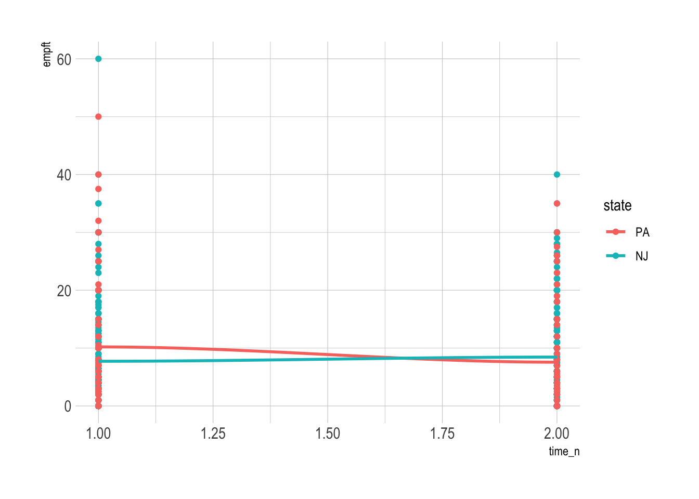
Show the code
ggplot(card_krueger_1994,
aes(x = time,
y = empft,
fill = state)) +
geom_boxplot()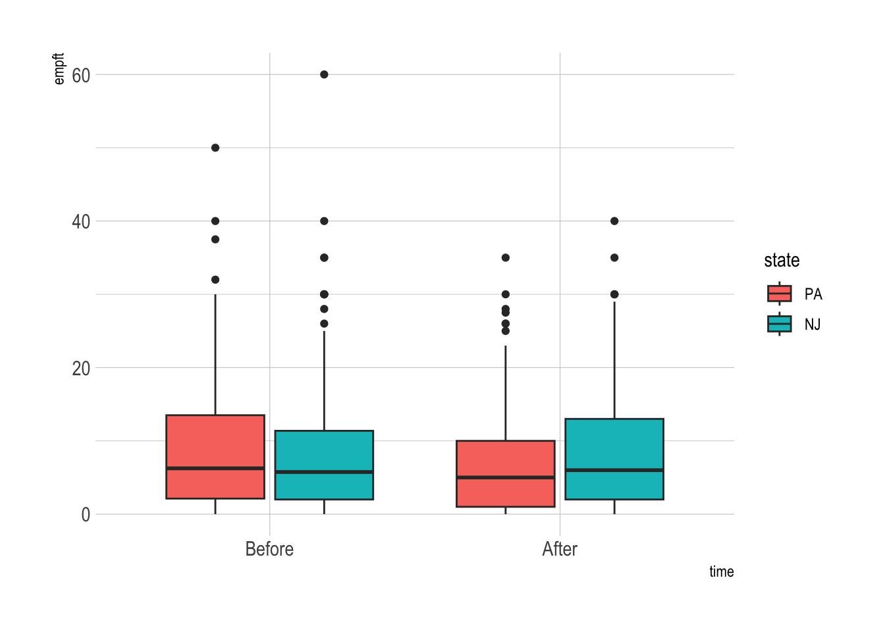
Show the code
ggplot(card_krueger_1994,
aes(x = time_n,
y = wage_st,
color = state)) +
geom_point() +
geom_smooth(se=F) 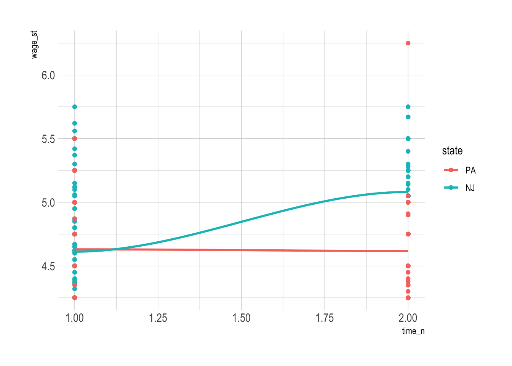
Show the code
card_krueger_1994 %>%
ggplot(aes(x= time, y= empft,fill = state))+
geom_bar(stat = 'identity')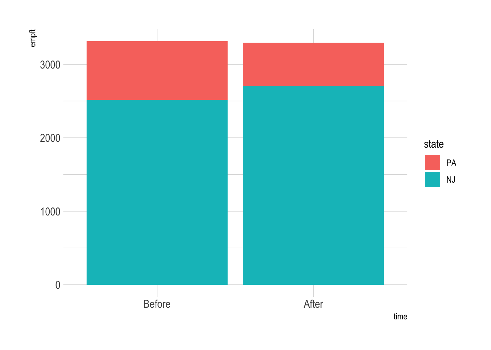
Show the code
q2b <- card_krueger_1994 %>%
group_by(time_n, state) %>%
summarize(mean_wage = mean(wage_st, na.rm = T))
ggplot(q2b,
aes(x= time_n, y= mean_wage, fill = state)) +
geom_col(position = 'dodge')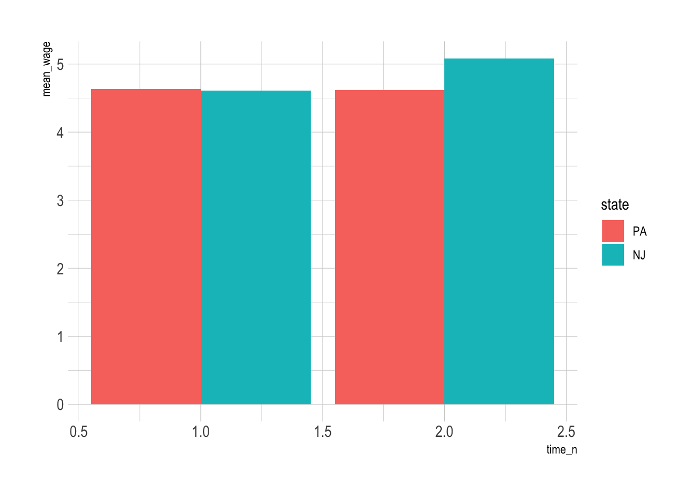
- Verbal description is not provided here.
Q2c.
Split the data.frame, card_krueger_1994, into training and testing data frames, in which (1) the training data frame contains approximately 70% observations with
state == PAand 70% of observations withstate == NJ, and (2) the testing data frame contains the rest 30% observations withstate == PAand the rest 30% of observations withstate == NJ.So, the training data frame contains approximately 70% observations of
card_krueger_1994, and the testing data frame contains approximately 30% observations ofcard_krueger_1994.In the training and testing data.frames, two different observations with the same value of
sheet(e.g., two observations withsheet == 1andtime == "Before",time == "After") must belong to either the training data.frame or the testing data.frame.
Show the code
q1b_1_pa <- card_krueger_1994 %>%
filter(time_n == 1 & state == "PA")
q1b_2_pa <- card_krueger_1994 %>%
filter(time_n == 2 & state == "PA")
q1b_1_nj <- card_krueger_1994 %>%
filter(time_n == 1 & state == "NJ")
q1b_2_nj <- card_krueger_1994 %>%
filter(time_n == 2 & state == "NJ")
set.seed(2)
gp_pa <- runif( nrow(q1b_1_pa))
set.seed(3)
gp_nj <- runif( nrow(q1b_1_nj) )
q1b_1_pa_train <- q1b_1_pa %>%
filter(gp_pa > .3)
q1b_1_pa_test <- q1b_1_pa %>%
filter(gp_pa <= .3)
q1b_2_pa_train <- q1b_2_pa %>%
filter(gp_pa > .3)
q1b_2_pa_test <- q1b_2_pa %>%
filter(gp_pa <= .3)
q1b_1_nj_train <- q1b_1_nj %>%
filter(gp_nj > .3)
q1b_1_nj_test <- q1b_1_nj %>%
filter(gp_nj <= .3)
q1b_2_nj_train <- q1b_2_nj %>%
filter(gp_nj > .3)
q1b_2_nj_test <- q1b_2_nj %>%
filter(gp_nj <= .3)
dtrain <- rbind(q1b_1_pa_train, q1b_2_pa_train,
q1b_1_nj_train, q1b_2_nj_train) %>%
arrange(sheet, time_n)
dtest <- rbind(q1b_1_pa_test, q1b_2_pa_test,
q1b_1_nj_test, q1b_2_nj_test) %>%
arrange(sheet, time_n)Q2d.
Consider the four linear regression models with the following four different formulas.
formula_1 <- log(empft) ~ time + state
formula_2 <- log(empft) ~ time * state
formula_3 <- log(wage_st) ~ time + state
formula_4 <- log(wage_st) ~ time * stateTrain the four linear regression models using the training data.frame from Q2c with the four different formulas,
formula_1,formula_2,formula_3, andformula_4.If you could not create the training data.frame in Q2c, use the data.frame,
card_krueger_1994, as the training data.frame.
Show the code
model_1 <- lm(empft ~ time+state,
data = dtrain)
model_2 <- lm(empft ~ time*state,
data = dtrain)
model_3 <- lm(wage_st ~ time+state,
data = dtrain)
model_4 <- lm(wage_st ~ time*state,
data = dtrain) Show the code
stargazer(model_1, model_2, model_3, model_4,
type = "text")| Dependent variable: | ||||
| empft | wage_st | |||
| (1) | (2) | (3) | (4) | |
| timeAfter | 0.207 | -3.190* | 0.369*** | -0.052 |
| (0.694) | (1.625) | (0.024) | (0.054) | |
| stateNJ | -0.136 | -2.172* | 0.227*** | -0.020 |
| (0.901) | (1.258) | (0.032) | (0.041) | |
| timeAfter:stateNJ | 4.147** | 0.512*** | ||
| (1.796) | (0.059) | |||
| Constant | 8.169*** | 9.833*** | 4.438*** | 4.639*** |
| (0.884) | (1.138) | (0.031) | (0.037) | |
| Observations | 553 | 553 | 541 | 541 |
| R2 | 0.0002 | 0.010 | 0.350 | 0.428 |
| Adjusted R2 | -0.003 | 0.004 | 0.347 | 0.425 |
| Residual Std. Error | 8.157 (df = 550) | 8.125 (df = 549) | 0.281 (df = 538) | 0.264 (df = 537) |
| F Statistic | 0.056 (df = 2; 550) | 1.815 (df = 3; 549) | 144.544*** (df = 2; 538) | 134.175*** (df = 3; 537) |
| Note: | p<0.1; p<0.05; p<0.01 | |||
Q2e.
Visualize the confidence intervals of all the beta estimates except for the variable
(Intercept).What does it mean that estimate == 0 belongs to a confidence interval?
Show the code
sum_model_2 <- tidy(model_2) %>%
filter(term != "(Intercept)")
sum_model_4 <- tidy(model_4)%>%
filter(term != "(Intercept)")
sum_model_1 <- tidy(model_1) %>%
filter(term != "(Intercept)")
sum_model_3 <- tidy(model_3)%>%
filter(term != "(Intercept)")
ggplot(sum_model_2) +
geom_pointrange( aes(x = term,
y = estimate,
ymin = estimate - 2*std.error,
ymax = estimate + 2*std.error ) ) +
coord_flip()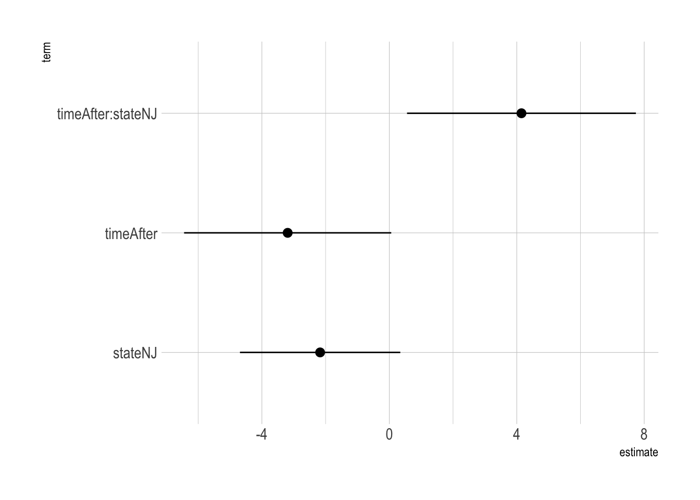
Show the code
ggplot(sum_model_1) +
geom_pointrange( aes(x = term,
y = estimate,
ymin = estimate - 2*std.error,
ymax = estimate + 2*std.error ) ) +
coord_flip()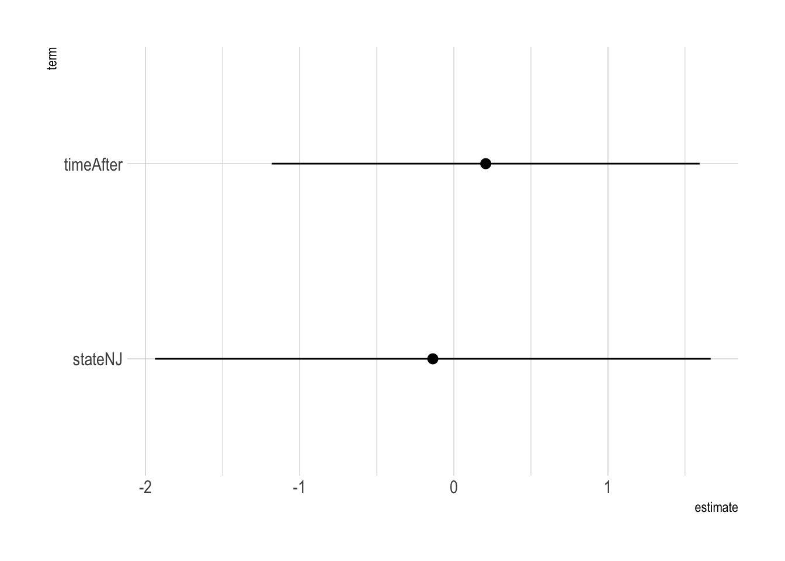
Show the code
ggplot(sum_model_4) +
geom_pointrange( aes(x = term,
y = estimate,
ymin = estimate - 2*std.error,
ymax = estimate + 2*std.error ) ) +
coord_flip()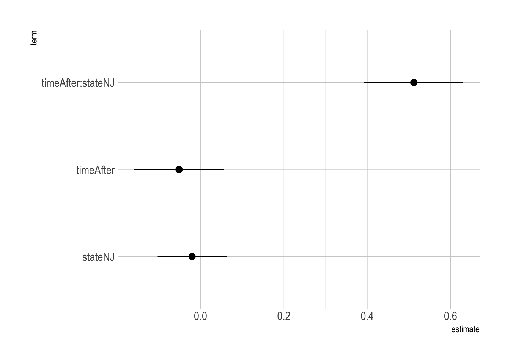
Show the code
ggplot(sum_model_3) +
geom_pointrange( aes(x = term,
y = estimate,
ymin = estimate - 2*std.error,
ymax = estimate + 2*std.error ) ) +
coord_flip()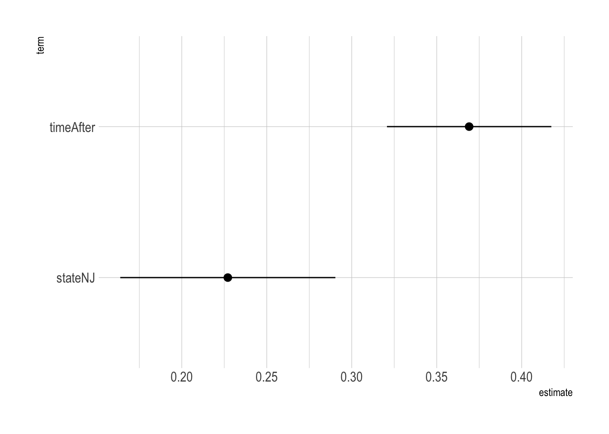
- If
estimate == 0belongs to a confidence interval of the beta estimate, the beta estimate may not be statistically different from zero, and there is insufficient evidence to conclude that there is a non-zero relationship between the explanatory variable and the outcome variable.
Q2f. and Q2g.
Interpret all the estimated coefficients from the model with
formula_2How did the increase in the minimum wage affect the employment level?
Provide any economic intuition on the estimation result.
Interpret all the estimated coefficients from the model with
formula_4.How did the increase in the minimum wage affect starting salary?
Provide any economic intuition on the estimation result.
Answer
- Interpretation of the beta estimates is not provided here.
- The work conducted by Card at the beginning of the 1990s also led to new research, which attempted to explain the absence of negative effects on employment.
- One possible explanation is that companies can transfer increased costs to consumers in the form of higher prices, without significant reductions in demand.
- Another explanation is that companies that dominate their local labor market can keep wages low; an increased minimum wage thus means that more people want to work, leading to increased employment.
- When companies have such power over the market, we cannot determine in advance how employment will be affected by changes to the minimum wage.
- The many studies inspired by Card and Krueger’s work have considerably improved our understanding of the labor market.
Question 3
The following is the data frame for Question 3:
citibike_trip_sample <- read_csv(
"https://bcdanl.github.io/data/citibike_trip.csv")Variable description
tripduration: Trip Duration (in seconds)
starttime: Start Time, in NYC local time.
stoptime: Stop Time, in NYC local time.start_station_id: Start Station ID
start_station_name: Start Station Name
end_station_id: End Station ID
end_station_name: End Station Name
bikeid: Bike IDusertype: User Type (Customer = 24-hour pass or 7-day pass user, Subscriber = Annual Member)
birth_year: Year of Birth
gender: Gender (unknown, male, female)
Q3a.
In data.frame, citibike_trip_sample, remove observations for which values of tripduration is missing.
Show the code
q3a <- citibike_trip_sample %>%
filter(!is.na(tripduration))Q3b
From the resulting data.frame in Q3a, consider only the observations, for which
- tripduration is less than 2 hours;
- birth_year is not missing;
- birth_year is greater than or equal to 1950;
- gender is either
femaleormale.
- gender is either
Describe how the relationship between
birth_yearandtripdurationvaries byusertypeandgenderusing ggplot.Make a comment on the resulting visualization.
Show the code
q3a %>%
filter(tripduration <= 60*60*2, !is.na(birth_year),
birth_year >= 1950,
gender != "unknown") %>%
ggplot(aes(x = birth_year, y = tripduration)) +
geom_point(alpha = .1)+
geom_smooth() +
facet_grid(usertype ~ gender, scale = "free_y")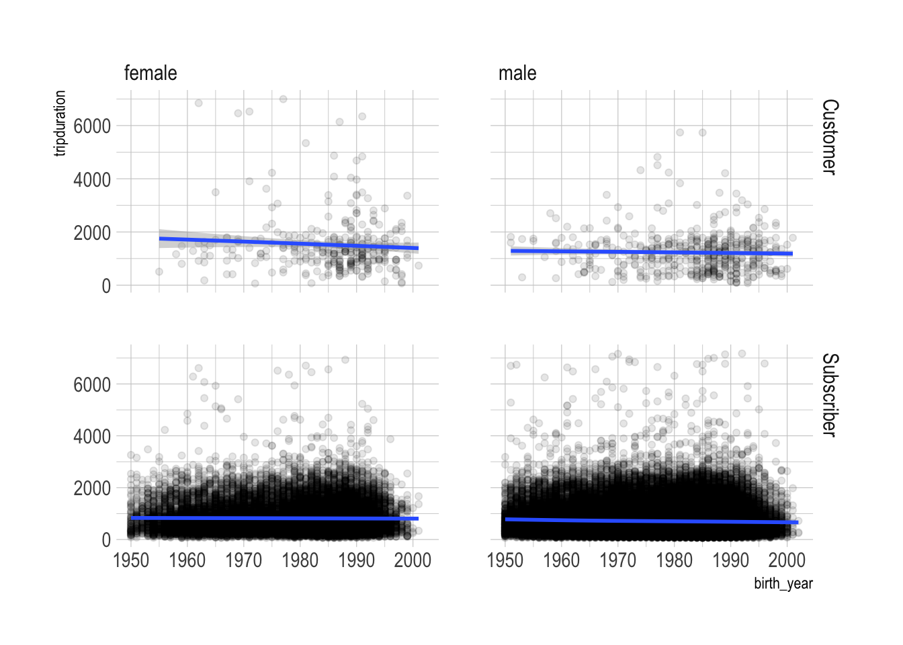
- Commenting is not provided here
Q3c.
Download the CSV file, citibike_stations.csv
- Variable description of
citibike_stations.csvstation_id: Unique identifier of a station.
name: Public name of the station.short_name: Short name or other type of identifier, as used by the data publisher.
latitude: The latitude of station. The field value must be a valid WGS 84 latitude in decimal degrees format.longitude: The longitude of station. The field value must be a valid WGS 84 longitude in decimal degrees format.
region_id: ID of the region where station is located.rental_methods: Array of enumerables containing the payment methods accepted at this station.capacity: Number of total docking points installed at this station, both available and unavailable.
num_bikes_available: Number of bikes available for rental.
num_bikes_disabled: Number of disabled bikes at the station.
num_docks_available: Number of docks accepting bike returns.
num_docks_disabled: Number of empty but disabled dock points at the station.
is_installed: Is the station currently on the street?is_renting: Is the station currently renting bikes?
is_returning: Is the station accepting bike returns?
- Create the data.frame,
citibike_trip_sample_geo, that includes the following variables:tripduration
start_station_id
start_station_namestart_latitude
start_longitude
start_capacity
end_station_id
end_station_name
end_latitude
end_longitude
end_capacity
Show the code
citibike_stations <- read_csv("/Users/byeong-hakchoe/Google Drive/suny-geneseo/teaching-materials/lecture-data/citibike_stations.csv")
colnames(citibike_stations) [1] "station_id" "name" "short_name"
[4] "latitude" "longitude" "region_id"
[7] "rental_methods" "capacity" "num_bikes_available"
[10] "num_bikes_disabled" "num_docks_available" "num_docks_disabled"
[13] "is_installed" "is_renting" "is_returning" Show the code
citibike_trip_sample_geo <- q3a %>%
rename(station_id = start_station_id ) %>%
left_join(citibike_stations,
by = "station_id") %>%
rename(start_latitude = latitude) %>%
rename(start_longitude = longitude) %>%
rename(start_station_id = station_id) %>%
rename(start_capacity = capacity) %>%
rename(station_id = end_station_id ) %>%
left_join(citibike_stations,
by = "station_id") %>%
rename(end_latitude = latitude) %>%
rename(end_longitude = longitude) %>%
rename(end_station_id = station_id) %>%
rename(end_capacity = capacity) %>%
select(starts_with("start_"),
starts_with("end_"),
tripduration) %>%
arrange(start_station_id, end_station_id)Q3d.
A bike route is defined by a combination of vales of
start_station_idandend_station_id.Using the resulting data frames from
citibike_trip_sample_geo, create the data frame with a route-level observation with the following variables:trip_mean: mean value of tripduration for each routetrip_n: number of bike trips for each routestart_station_id: Start Station ID
start_station_name: Start Station Name
start_capacity: Start Station Capacity
end_station_id: End Station ID
end_station_name: End Station Name
end_capacity: End Station Capacity
Show the code
q3d <- citibike_trip_sample_geo %>%
group_by(start_station_id, end_station_id) %>%
mutate(
trip_mean = mean(tripduration, na.rm = T),
trip_n = n()
) %>%
select(trip_mean, trip_n,
starts_with("start_"), starts_with("end_")) %>%
unique()Q3e.
Using the resulting data.frame in Q3d, find the top 10 most popular bike routes.
Show the code
q3e <- q3d %>%
arrange(-trip_n, -trip_mean)Q3f.
Consider the observations for which
trip_nis less than or equal to 30.Describe the relationship between
trip_nandstart_capacityusing ggplot.Make a comment on the resulting visualzation.
Show the code
q3d %>%
filter(trip_n < 30) %>%
ggplot(aes(x = start_capacity,
y = trip_n) ) +
geom_point(alpha = .25) +
geom_smooth()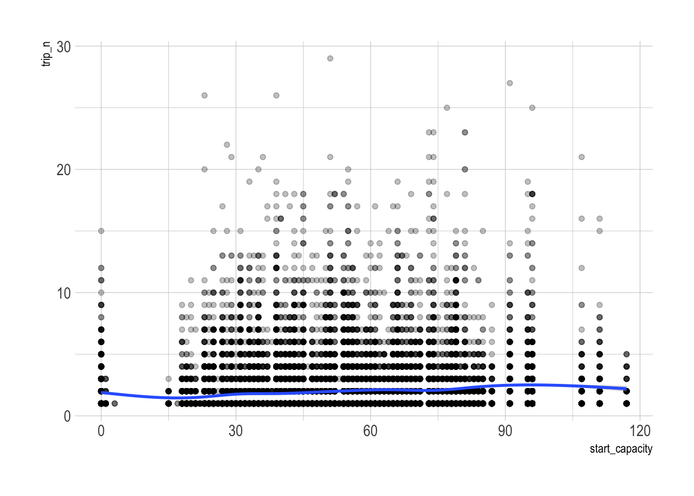
- Comments are not provided here.
Question 4
The following is the data frame for Question 4:
okboomers <- read_csv("https://bcdanl.github.io/data/okboomers.csv")Variable description
year: Yearmonth: Monthn_days: Number of days in monthbirths: Number of birthstotal_pop: National Populationdate: Datecountry: Country
Q4a.
Report (1) minimum, (2) median, (3) maximum, (4) mean, and (5) standard deviation of variable births for the United States.
Show the code
table(okboomers$country)
England and Wales United States
648 996 Show the code
okboomers %>%
filter(country == 'United States') %>%
skimr::skim()| Name | Piped data |
| Number of rows | 996 |
| Number of columns | 7 |
| _______________________ | |
| Column type frequency: | |
| character | 1 |
| Date | 1 |
| numeric | 5 |
| ________________________ | |
| Group variables | None |
Variable type: character
| skim_variable | n_missing | complete_rate | min | max | empty | n_unique | whitespace |
|---|---|---|---|---|---|---|---|
| country | 0 | 1 | 13 | 13 | 0 | 1 | 0 |
Variable type: Date
| skim_variable | n_missing | complete_rate | min | max | median | n_unique |
|---|---|---|---|---|---|---|
| date | 0 | 1 | 1933-01-01 | 2015-12-01 | 1974-06-16 | 996 |
Variable type: numeric
| skim_variable | n_missing | complete_rate | mean | sd | p0 | p25 | p50 | p75 | p100 | hist |
|---|---|---|---|---|---|---|---|---|---|---|
| year | 0 | 1 | 1974.00 | 23.97 | 1933 | 1953.00 | 1974.0 | 1995.00 | 2015 | ▇▇▇▇▇ |
| month | 0 | 1 | 6.50 | 3.45 | 1 | 3.75 | 6.5 | 9.25 | 12 | ▇▅▅▅▇ |
| n_days | 0 | 1 | 30.44 | 0.82 | 28 | 30.00 | 31.0 | 31.00 | 31 | ▁▁▁▅▇ |
| births | 0 | 1 | 301422.83 | 52536.44 | 165939 | 280200.25 | 315994.0 | 337987.00 | 392230 | ▂▁▃▇▃ |
| total_pop | 0 | 1 | 214656790.84 | 60204286.68 | 125579000 | 158956000.00 | 213341554.0 | 266278393.00 | 321039839 | ▇▆▆▅▆ |
Q4b.
- Add the following variable to the data.frame,
okboomers:births_pct_day: Average number of births per million people per day, for the observed month
Show the code
okboomers <- okboomers %>%
mutate(births_pct_day = 1000000 * (births / total_pop) / n_days)Q4c.
Describe the monthly trend of
births_pct_dayfor each country in one plot.Make a comment on the resulting visualization.
Show the code
ggplot() +
geom_line(data = filter(okboomers,
country == "United States"),
aes(x = date, y = births_pct_day),
size = 0.5,
color= 'red') +
geom_line(data = filter(okboomers,
country == "England and Wales"),
aes(x = date, y = births_pct_day),
size = 0.5,
color= 'blue') 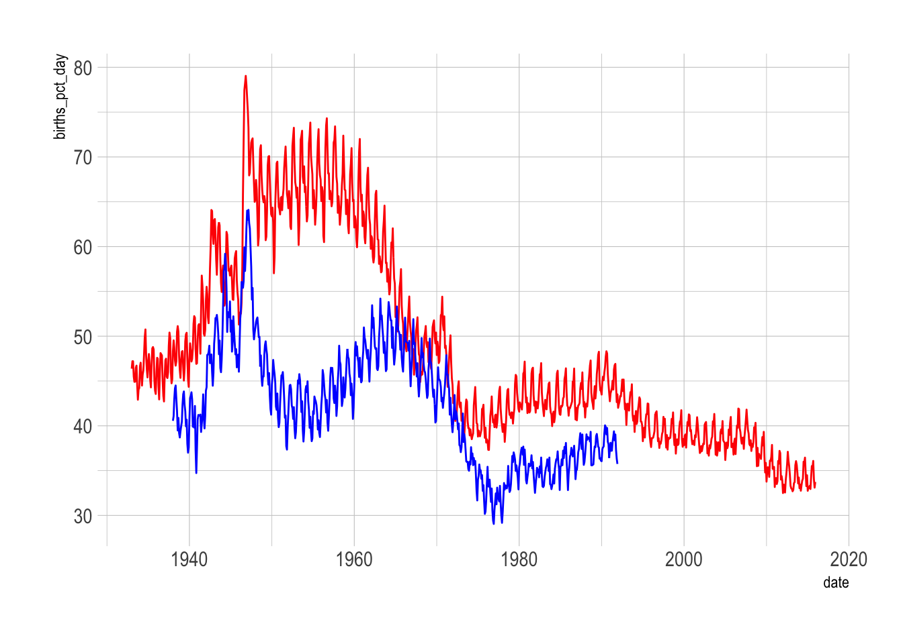
- Comments are not provided here.
Q4d.
- Which year and month did record the highest
births_pct_day? - Which year and month did record the second highest
births_pct_day?
Show the code
okboomers <- okboomers %>%
mutate(births_pct_day = 1000000 * (births / total_pop) / n_days)
q4d1 <- okboomers %>%
filter(country == "United States") %>%
arrange(-births_pct_day) %>%
slice(1:2)
q4d2 <- okboomers %>%
filter(country != "United States") %>%
arrange(-births_pct_day) %>%
slice(1:2)- The highest year was 1960 with 392,230 births in month 8
- The second highest year was 2007 with 390,378 births in month 8